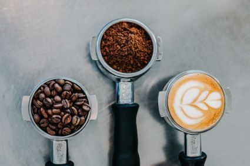

How Caffeine in Coffee Works
Kristi Yang | August 4, 2020
I had my first sip of coffee when I was about 10 years old. My dad was sitting on the couch relaxing and, being the curious little girl I was, I ran up to him and begged him to try a sip. It was the worst thing I had ever tasted—it was bitter and left a weird taste in my mouth. I told myself I would never voluntarily drink something so gross again. But here we are, 10 years later, and I can’t start my day without a cup of coffee. At first, coffee was just a crutch that I used to keep up with everything, but after a while, I started to love the taste. The distinct coffee flavor that blended so smoothly with the creamy flavor of milk. The bitterness that I used to hate was now a welcomed taste. And so my coffee journey began.
Every morning I would start the day with a cup of coffee. By mid-afternoon, I would stop to pick up my second cup. Around dinner, I would grab my final cup of the day and begin my homework for the night. At one point, I became a barista at Starbucks which only fueled the addiction. Not only did I have easy access to coffee, but I could get it for free—something my friends definitely appreciated during exam season.
After a while, I realized that I was drinking way too much coffee. I didn’t want to fully rely on multiple cups of coffee to get me through the day. So I decided to look into the science behind coffee to understand how this delicious drink worked.
The magic drink begins with its best known aspect: caffeine. This is the naturally-occurring stimulant that most people (including myself) pour that first cup of coffee in the morning for. The process is similar to the Little Red Riding Hood story. Normally, when it’s time to sleep, the body produces adenosine that binds to the adenosine receptors in the brain. The brain is Little Red going into Grandma’s house, expecting to find Grandma in the bed. But instead, caffeine disguises itself like adenosine, just like the big bad wolf disguising himself as Grandma. At first, Little Red doesn’t really know whether or not it’s the wolf or grandma so she goes inside anyways, just like the brain letting caffeine bind to the adenosine receptors. But when Little Red finds out that it’s a wolf and not Grandma, she runs to the other side of the room instead of sharing the cookies she brought in her basket. Just like Little Red, instead of relaxing and preparing to sleep, the brain reacts to the caffeine and release adrenaline, also known as the “fight or flight” hormone. With the adrenaline released in your body, your heart beats faster, pupils dilate, your muscles tighten up, and most notably, your brain is alert.
So now that you drank the coffee, you’ll have to wait anywhere from 15-30 minutes for the caffeine to work its magic. And at about 45 minutes in, the caffeine should be at its peak and you will feel the strongest effects. But even though caffeine stays in the body for about 24 hours, the effects only last for about 5-6 hours. This time varies depending on the person and their habits, like metabolism, caffeine tolerance, and diet.
With this better understanding of how my morning cup of coffee works, I decided to make some adjustments to my life. So, I first cut down on my coffee intake. I would drink one less cup of coffee each week, and slowly decrease the number until I was only at 1 cup a day. Although it seemed like a small change, it was still definitely a struggle for me, and my family who had to deal with me. In the middle of the day, I would have headaches that I complained endlessly about, random flashes feeling hot and then cold which I tried to fix with turning a fan on and off, and a bad mood that my family was not too happy to be around. But after all of that, I was able to cut down on my caffeine intake, and actually saw a noticeable difference in my reaction to caffeine. At the peak of my coffee drinking, I found that a cup of coffee could keep me awake for about 2-3 hours before I needed my second cup. Now, I found that I could drink a cup of coffee and be awake for 5 hours. It’s both strange and fascinating how different the body can react if you make small changes in your life.
Caffeine Content in Drinks:
| Drink | Amount | Caffeine |
|---|---|---|
| Coffee | 1 Cup (8 oz) | 125mg - 150mg |
| Espresso | 1 Shot (1 oz) | 60mg - 75mg |
| Matcha Green Tea | 1 Cup (8 oz) | 60mg - 80mg |
| Black Tea | 1 Cup (8 oz) | 60mg - 75mg |
| Soda | 1 Can (12 oz) | 30mg - 55mg |
| Oolong Tea | 1 Cup (8 oz) | 30mg - 45mg |
| Green Tea | 1 Cup (8 oz) | 15mg - 30mg |
| White Tea | 1 Cup (8 oz) | 10mg - 15mg |
| Hot Chocolate | 1 Cup (8 oz) | 8mg - 15mg |
| Decaf Coffee | 1 Cup (8 oz) | 6mg - 10mg |
Sources Used + Further Reading:
Blog Post:
- "Caffeine: The Silent Killer of Success" by Travis Bradberry
- "How Caffeine Works" by Marshall Brain, Charles W. Bryant & Matt Cunningham
- "How Caffeine Works" by the National Sleep Foundation
- "Sleep and Caffeine" by Thomas M. Heffron
Caffeine Content Chart: